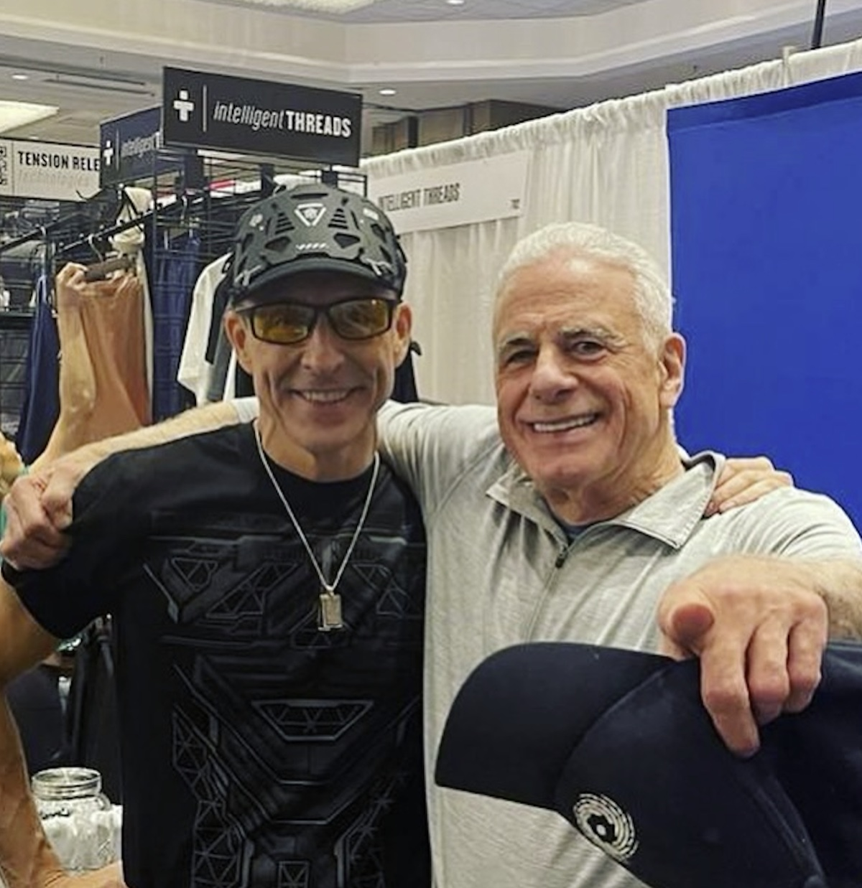

I · Hands
Hands
Detect intention and trustworthiness on contact.
It wasn't IQ. It wasn't genes. It was the Energy of your Relationships.
An 87-year Harvard study tracking 1,700+ lives proved that relationship quality predicts your health at 80 better than your cholesterol at 50 — and your income by $141,000 a year. Dr. Barry Morguelan, former Head of Gastroenterology at multiple leading hospitals in Los Angeles, advisor to Tony Robbins and Jay Abraham, reveals the Energy system that transforms every relationship in your life.


“Dr. Barry can shift your ability to make Energy inside your body in a way that is profound.”
Dave Asprey · Founder, BEYOND Biohacking Conference
American adults report experiencing significant loneliness — a condition the U.S. Surgeon General now says is as deadly as smoking 15 cigarettes a day.
— U.S. Surgeon General's Advisory, 2023 · Holt-Lunstad Meta-Analysis · N=308,849
If the relationships around you — business, family, friendships, partnerships — feel like they're draining you instead of building you…
Or you look at your network and realize none of them are the kind of people who challenge you to grow…
Or your business partnerships keep going sideways — the wrong collaborators, the wrong hires, the wrong alliances…
Or your family dynamics are stuck in patterns that haven't changed in decades…
— I need to tell you something that might change everything.
Good relationships keep us happier and healthier. Period. It was not their middle-age cholesterol levels that predicted how they were going to grow old — it was how satisfied they were in their relationships.
Robert Waldinger · Director, Harvard Study of Adult Development · 87 yrs · 1,700+ participants
The data is staggering. People with strong relationships earn $141,000 more per year at their peak. Married couples accumulate 2–9× the net worth of their single peers. Having a best friend at work makes you 7× more likely to be engaged.
Relationships aren't a nice-to-have. They are the single most powerful lever for everything you want in life. And most people have no system for building them.
Your ability to sense who to trust, who to partner with, who to distance yourself from, and who to invest in — that ability lives in your body. In physical sensors in your hands, heart, gut, and spine. And for most adults, those sensors have been shut down by stress, by betrayal, by years of ignoring what your body was trying to tell you.
It's not a networking problem. It's an Energy problem.
Beyond my 40+ year medical career, I've worked one-on-one with entrepreneurs, billionaires, CEOs, world-class performers, and everyday people who share the same struggle: their relationships — business, personal, family — don't match their ambition, intelligence, or heart.
The pattern is always the same. Smart, capable people. Surrounded by relationships that drain them instead of build them. And I've identified the reason that NONE of the traditional solutions can address. Something physical. Something in the body. Something measurable.
Your relationship sensors are shut down.
And right now, you're flying blind — choosing business partners, tolerating family dynamics, and building friendships without the equipment you were born with.
Detect intention and trustworthiness on contact.

Generates a field 100× more powerful than the brain, broadcasting AND receiving.

The “second brain” with 100 million neurons reading energetic safety.

The central conductor that integrates all sensor data into a single signal.
When these sensors are active, you know — who to trust in a deal, who to distance from in your family, who to invest in as a friend, who to build with as a partner. You don't guess. You don't rationalize. You know.

Collected 500 business cards. Connected on LinkedIn. But quantity isn't quality. Stanford: 80% of jobs come through relationships — and you can't force the right ones at a mixer.

Teaches you scripts and frameworks. But if your sensors are offline, you're communicating beautifully with the wrong people.

“Set better boundaries.” “Be more vulnerable.” Good advice. But no protocol for reactivating the physical sensors that let you feel who belongs in your life.

Helps you understand your patterns intellectually. But perfect insight into why you tolerate Energy vampires doesn't reactivate the sensors.

“Just surround yourself with better people.” As if choosing with a deactivated sensor system would produce different results.
None of them addressed the one thing that actually determines who you attract, who you trust, and who you build with:
Your body's relationship sensor system.
This isn't theory. The longest study ever conducted on human life — Harvard's Study of Adult Development, running since 1938 — proved that relationships predict health, wealth, and happiness better than IQ, social class, or even genes.
People with the warmest relationships earned $141,000/year more at their peak. Financial success depended on warmth of relationships, not intelligence.
Loneliness increases mortality risk equivalent to smoking 15 cigarettes a day — greater than obesity, lack of exercise, or air pollution.
Employees with a best friend at work are 7× more likely to be engaged. Moving workplace friendship from 2-in-10 to 6-in-10 increases profits 12%.
In all 5 Blue Zones where people routinely live past 100, strong social networks are a defining feature. One Okinawan group: together 97 years; avg age 102.
That's the income gap between people with the warmest relationships and everyone else. Not from IQ. Not from education. Not from social class. From relationship quality. When your sensors are active, relationship decisions stop being guesswork — they become recognition.

Once your sensors are active, you can feel the difference instantly — in a business meeting, at the family dinner table, with old friends. Every person falls into one of four energetic categories.
Win-win-win. They give from abundance. Every interaction leaves you with more Energy, not less. The business partner who makes everyone around them better. Wharton research calls them “givers” — and they earn 50% more revenue than everyone else.
Win-win, with conditions. They can be great colleagues, friends, or partners — but their Energy fluctuates. When business is good, they're generous. When stressed, they withdraw. Most people live here.
Win-lose. They take more Energy than they give. Often the most charismatic person in the room. But over time, every relationship with them leaves you drained, depleted, diminished.
Lose-lose. They don't just take — they diminish everyone around them. The toxic family member, the sabotaging business partner. The most dangerous because they can be the most compelling.
The Energy of Relationships System shows you your current Category — honestly — and gives you the protocol to move to Category 1 in every domain of your life. Because when you become Category 1, Category 1 people start showing up.
“I kept partnering with the wrong people. Three failed ventures. Within weeks of the sensor activation, I could feel the difference between a Category 1 collaborator and a Category 3 who just looked good on paper. My current business partner — I never would have trusted the signal before.”
“My relationship with my teenage daughter was slipping away. The Category system showed me I was being a Category 3 parent without realizing it. I was draining her Energy the same way my boss drains mine. That awareness changed everything.”
“I was surrounded by people at work and felt completely alone. The sensor reactivation changed how I show up in every meeting, every call, every dinner. My team performs differently. My marriage is different. Even my friendships.”
Seven modules covering business, family, friendships, and partnerships. Plus RTVTs, the workbook, the assessment toolkit, and a live group Q&A call with Dr. Barry. Available immediately.
The first principles of the Energy of Relationships System. How your sensors got switched off — and the gentle inputs that bring them back online. Establishes the language, the lens, and the daily ground you'll build everything else on.
Every connection in your life mapped to its true type — Builders, Conditional, Takers, Destroyers. The taxonomy that makes who you attract, tolerate, and chase suddenly obvious across business, family, and friendship.
Hands, heart, gut, spine. How to reactivate each of the four sensor locations and read the Energy of any person in any room — in real time, on contact, before the rational mind catches up.
The protocol to move yourself — honestly — from wherever you are now into Category 1. Because the people you want around you are already there. You can't fake your way in; you have to become it.
The energetic broadcast. When your sensors are clean and your category is raised, the right business partners, deeper friendships, and stronger family bonds start finding you. Magnetism as a practice, not a personality.
For the ones you can't simply walk away from — the family member, the co-founder, the long marriage in a tight spot. Repair, recovery, and the clean exit. Knowing the difference is the work.
The deeper training reserved for committed practitioners — advanced sensor integration, complex multi-person dynamics, high-stakes situations, and the nuances that separate good from exceptional results. Sustaining Category 1 long term.
The signature audio protocol — short, daily sensor-calibration sessions that re-tune your nervous system to the Energy of others. Listen with intention; carry the effect into every encounter.
The day-by-day, week-by-week map of the sensor reactivation journey. Category Classification worksheets, sensor tracking logs, and relationship Energy audits for every domain — business, family, friends, partner.
The complete Category Classification self-assessment plus a relationship Energy audit for every significant relationship in your life — business partners, family members, friends, and your partner. Know where you stand. Know where they stand.
An exclusive small-group live call directly with Dr. Barry — live Q&A and a real-time Energy transmission. The closest you can get to working with Dr. Barry personally, at a fraction of the private session cost.
Instant Access · 30-Day Guarantee
Everything required to reactivate your relationship sensors and transform every connection.
Complete System · BEYOND Attendee Edition
Comparison
Executive coaching: $300–$500/session
Private with Dr. Barry: $2,000+
10× private value · included
Follow the Energy of Relationships System for 30 days. Do the morning and evening sensor activation practices. Complete the Category Classification across every relationship domain. Use the Quadruple-A method. Listen to the RTVT daily.
If after 30 days of consistent participation, you haven't experienced the activation signs — the warmth in your hands during practice, the gut clarity when reading people, a shift in how you show up in business meetings, family conversations, and friendships — contact our team and we'll refund your entire investment.
In 40+ years, I have never had a single completer who didn't experience sensor activation. Not one.
“You risk nothing. The 30-Day Guarantee covers every penny.”
— Dr. Barry Morguelan · No questions beyond confirming your participation
Every day you navigate relationships with deactivated sensors is another day you're leaving money, health, and happiness on the table.
Another day with a business partner who drains more than they build. Another family dinner that leaves you depleted. Another friendship you tolerate instead of one that transforms you.
Harvard proved that warm relationships predict $141,000 more per year. That relationship quality at 50 predicts health at 80 better than cholesterol. That loneliness kills at the rate of 15 cigarettes a day.
The cost of bad relationships isn't just emotional.
It's financial. It's physical. It's everything.
That's the real cost of doing nothing. Not $197. Another year surrounded by the wrong people.
Start Module 1 tonight. Within the first session, you'll know your Category across every domain — business, family, friendships, partnership. Most people are surprised — not by the answer, but by how much it explains.
Within the first week of the activation practices, you'll feel it. A warmth in your hands during the exercises. A clarity in your gut that wasn't there before. A quiet confidence that changes how people respond to you.
Within days, you'll start noticing things about the people around you. Things you couldn't see before. Which business relationships are building you and which are draining you. Which friendships challenge you to grow and which keep you stuck. Which family dynamics need to shift.
The relationships that drain you will become obvious. The ones that build your wealth, health, and happiness will too.
And somewhere in the first few weeks, something shifts. A business conversation goes differently. A family pattern breaks. A new collaborator shows up. An old friendship deepens.
Not because you learned a networking technique. Because your sensors came back online. And you can finally feel the truth about every person in your life.
Your sensors activate. Your relationships transform. Everything changes.
Start Module 1 tonight. Transform every relationship in your life.
Transform My Relationships Now →Limited Enrollment · Transform Your Relationships Today